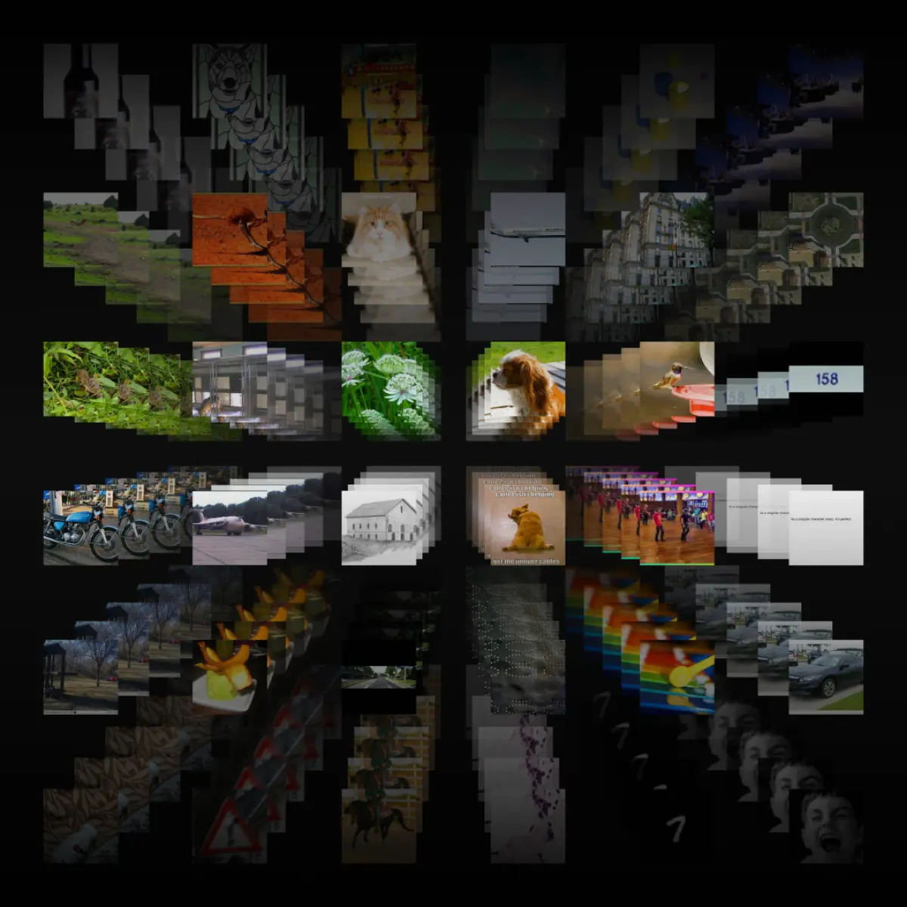
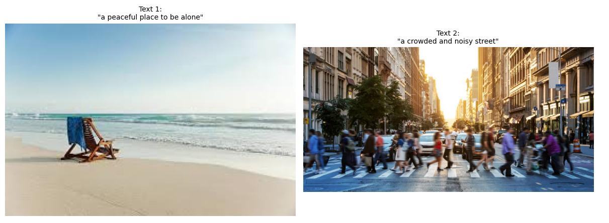
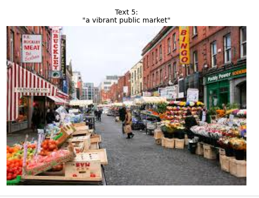

CLIP for Cross-Modal Retrieval: From Embedding to Search
While working on a recent project, I faced a challenge that seemed simple at first: I needed to generate embeddings for both images and text and use them together for retrieval. But the deeper I went, the more I realized the core issue — the image and text encoders I was using were trained independently and produced embeddings in different spaces. Comparing them directly was like matching puzzle pieces from different sets. Without a shared understanding between the two modalities, retrieval based on meaning simply wasn't working.
That's when I discovered CLIP, a model designed to solve this exact problem. Unlike traditional models that treat vision and language as separate tasks, CLIP is trained on image-text pairs and learns to map both into the same vector space. This means that instead of relying on exact matches or predefined categories, it aligns images and text based on meaning, allowing them to be compared directly — even when they come from entirely different formats.
In this blog, we'll explore how CLIP works under the hood — from its dual encoder architecture to the contrastive learning technique that brings the two modalities together. To show its capabilities in action, we'll look at how CLIP can embed both visual and textual inputs and retrieve relevant results across modalities, based purely on semantic similarity rather than labels or fixed vocabularies.
What is CLIP?
CLIP, which stands for Contrastive Language–Image Pretraining, is a deep learning model developed by OpenAI in 2021. Its key strength lies in producing embeddings for both images and text that share the same space, enabling direct comparisons between the two modalities. This is accomplished by training the model to bring related image–text pairs closer together while pushing unrelated ones apart.
CLIP moves beyond traditional classification systems by relying on semantic relationships instead of predefined categories or labels. It allows flexible matching between language and visuals, making it suitable for a wide range of open-ended tasks like retrieval, search, and zero-shot classification.
Architecture of CLIP
At the core of CLIP's architecture are two separate encoders — one for images and one for text — trained together to understand and align both modalities.
- The image encoder in CLIP is usually a Vision Transformer (ViT). Its job is to look at an image and turn it into a fixed-length vector — called an embedding — that captures what's in the image. The Vision Transformer works by breaking the image into small patches (like dividing a picture into pieces), and then learning how these pieces relate to each other. This helps the model understand not just objects and colors, but also the overall scene or feeling of the image.
- The text encoder is a Transformer-based model, similar to those used in popular language models like GPT. It reads a sentence or phrase and creates an embedding that represents the full meaning of the text. Instead of just looking at each word on its own, the model learns how words relate to each other in context — which helps it understand descriptions, emotions, or abstract ideas in the sentence.
How CLIP Works Under the Hood
Now that we've seen what CLIP is made of, let's look at how it actually works in practice. How does it take an image and a sentence — two very different types of input — and decide whether they match?
To understand that, we'll walk through the steps CLIP follows: from creating embeddings, to comparing them, to how it learns to align vision and language in the same space.
We'll follow along with a working example: imagine we have a collection of images — peaceful beaches, crowded markets, spiritual spaces, urban streets — and we want to search them using a text query like "a peaceful place to be alone." We'll see how CLIP processes these inputs step by step, and how it retrieves only the most semantically relevant results — even without being explicitly trained for this task.
Step 1: Embedding the Inputs
CLIP begins by converting both text and images into embeddings — numerical vectors that represent their meaning. These embeddings live in the same space, allowing CLIP to compare them directly.
We'll start by embedding five natural language descriptions and a folder of scene images.
from transformers import CLIPProcessor, CLIPModel
import torch
device = "cpu"
texts = [
"a peaceful place to be alone",
"a crowded and noisy street",
"a quiet reading corner",
"a place of worship or meditation",
"a vibrant public market"
]
model = CLIPModel.from_pretrained("openai/clip-vit-base-patch32").to(device)
processor = CLIPProcessor.from_pretrained("openai/clip-vit-base-patch32")
with torch.no_grad():
inputs = processor(text=texts, return_tensors="pt", padding=True).to(device)
text_embeddings = model.get_text_features(**inputs)
Example Text Embedding
([-0.0912, 0.0740, -0.1325, ..., 0.1032]) # 512-dimensional
Image Embedding
from PIL import Image
import os
from tqdm import tqdm
image_folder = "scene_images"
image_embeddings = []
image_paths = []
with torch.no_grad():
for file in tqdm(os.listdir(image_folder)):
if file.lower().endswith(('.jpg', '.jpeg', '.png')):
path = os.path.join(image_folder, file)
image = Image.open(path).convert("RGB")
inputs = processor(images=image, return_tensors="pt").to(device)
image_embedding = model.get_image_features(**inputs)
image_embeddings.append(image_embedding)
image_paths.append(path)
image_embeddings = torch.cat(image_embeddings, dim=0)
Example (image embedding):
([ 0.1023, -0.0852, 0.0315, ..., 0.1456]) # 512-dimensional
With the raw embeddings generated, the next step is to normalize them so that comparison depends only on direction — not on the length of the vectors.
Step 2: Normalizing the Embeddings
CLIP compares vectors using cosine similarity, which depends only on their direction, not magnitude. To make this comparison meaningful, all embeddings must be normalized — that is, scaled to have a unit length (length = 1).
This step ensures the similarity score is purely based on how aligned the vectors are in space.
import torch.nn.functional as F
# Normalize text embeddings
text_embeddings = F.normalize(text_embeddings, p=2, dim=1)
# Normalize image embeddings
image_embeddings = F.normalize(image_embeddings, p=2, dim=1)
Example output (a normalized 512-dimensional vector):
[-0.0785, 0.0637, -0.1141, ..., 0.0889]
After normalization:
- Each vector still points in the same direction
- But now all vectors have the same length (1.0)
- So comparisons like cosine similarity are fair and consistent
Step 3: Computing the Similarity Matrix
Now that the embeddings are normalized, we can measure how similar each text is to each image using cosine similarity.
Since all vectors are unit-length (thanks to normalization), cosine similarity is simply the dot product between vectors — no extra math required.
What Is a Similarity Matrix?
It's a grid where:
- Rows = text inputs (queries)
- Columns = images
- Each cell shows how similar a given text is to a given image
A higher value means a stronger match.
Compute Similarity Matrix
# Compute similarity matrix (text x image)
similarity = text_embeddings @ image_embeddings.T # shape: [5, 5]
Here, @ is matrix multiplication (dot product).
- If you have 5 texts and 5 images, you'll get a 5×5 matrix
- Each entry
[i, j]represents similarity between textiand imagej
Example (similarity scores)
[[0.92, 0.12, 0.05, 0.87, 0.09],
[0.11, 0.95, 0.08, 0.10, 0.84],
[0.89, 0.14, 0.91, 0.23, 0.10],
[0.13, 0.08, 0.11, 0.96, 0.15],
[0.05, 0.84, 0.07, 0.16, 0.93]]
Each row corresponds to one text, and each column to one image. The highest value in each row shows which image best matches that text.
Step 4: Retrieving the Best Matches
In this step, we'll interpret the similarity scores computed earlier and retrieve the most relevant image for each input text. This mirrors how CLIP works during inference — by choosing the image with the highest similarity to the given text.
How CLIP Makes the Match
- For each text, CLIP looks at all similarity scores to the available images
- It selects the image with the highest score — this is the best semantic match
Result


CLIP retrieves semantically matching images for each natural language query — without being trained on this task. It aligns meaning across text and vision using a shared embedding space.
But How Does CLIP Know Which Text Matches Which Image?
Seeing the retrieval results, it's tempting to think this matching process is just a clever trick — but what's happening behind the scenes is far more profound.
CLIP doesn't rely on traditional supervised training with labeled categories. Instead, it was trained on 400 million (image, text) pairs collected from the internet, learning to associate natural language with visual content at scale. But the real secret lies in how it was trained: using a method called contrastive learning.
CLIP's Training: Contrastive Learning with InfoNCE Loss
During training, CLIP is given batches of images and their corresponding captions. Its goal is to learn which text goes with which image — and which ones don't. This is achieved using a contrastive loss function called InfoNCE.
In each training batch:
- Every image is paired with one correct text (its caption)
- The model computes the similarity between all images and all texts
- It then learns to pull the correct image–text pairs closer together in the embedding space, and push all incorrect pairs apart
This teaches CLIP to understand alignment not by category labels, but by context, meaning, and semantic intent. Whether the input is "a peaceful place to be alone" or "a vibrant public market," CLIP learns to represent both the text and the visual scene in the same space — so matching becomes as simple as comparing vectors.
Because of this contrastive training setup, CLIP can generalize beyond its training data. It doesn't just recognize known classes — it understands natural language and can match it with images in a zero-shot way. That's why it works even when we give it totally free-form queries like moods, atmospheres, or places it's never seen before.
In short: CLIP doesn't memorize. It aligns — and that's what makes it so powerful.
GitHub Repository: Check out the repo for the full code and setup: github.com/BhoomikaLohana/My-Path-to-understand-ML/tree/main/CLIP_for_Cross-Modal_Retrieval